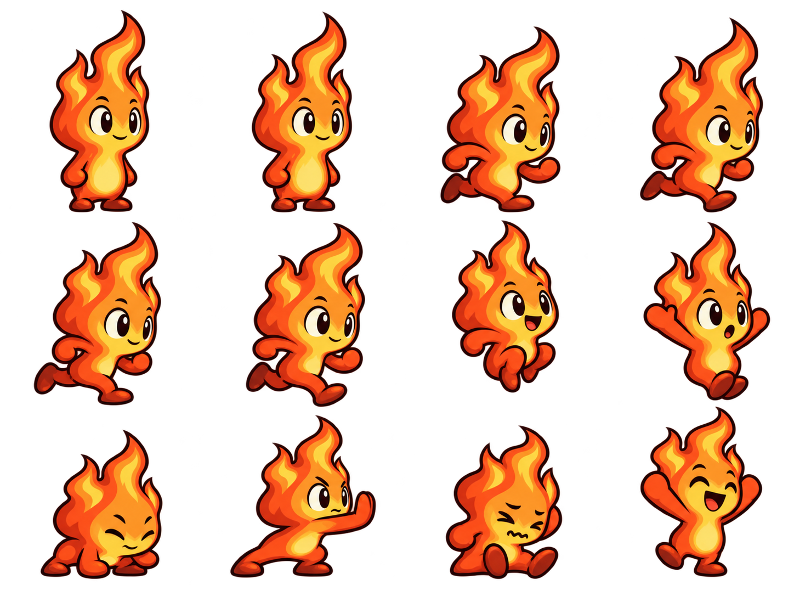
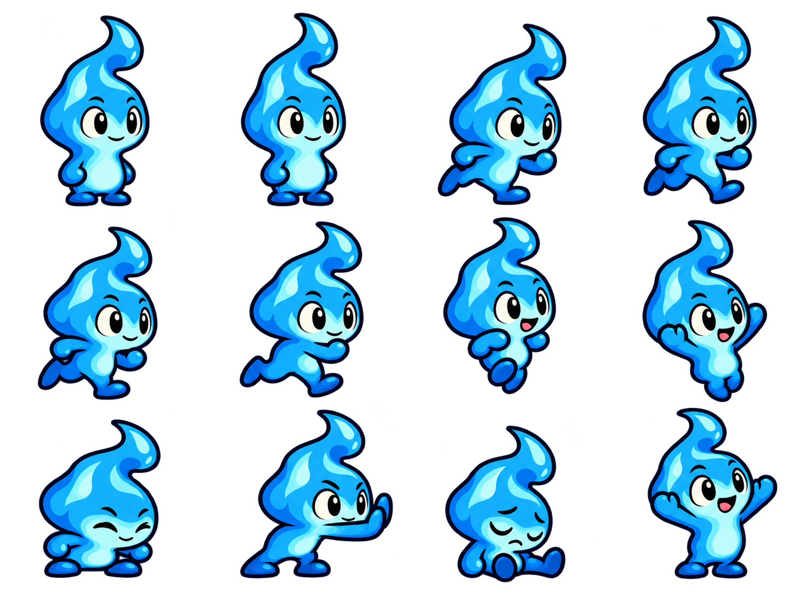
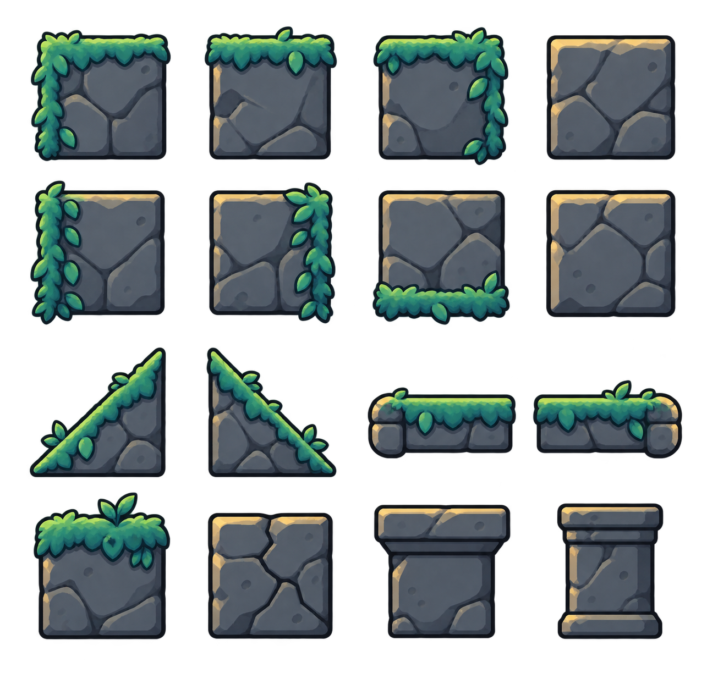
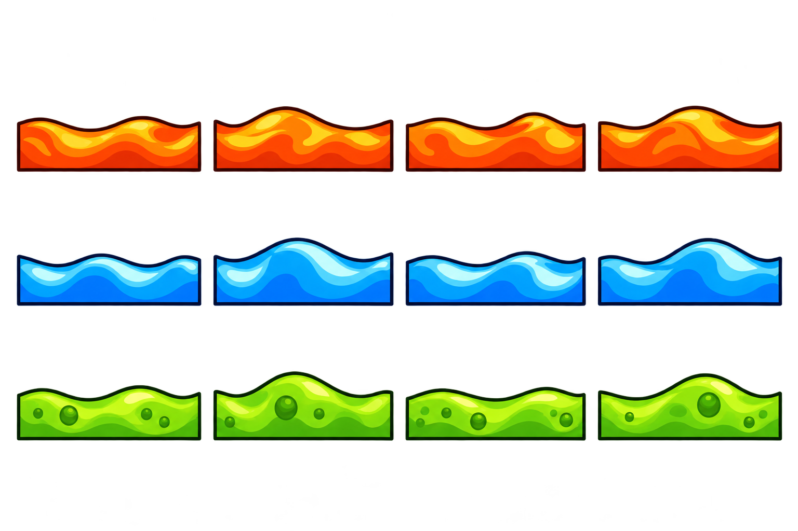
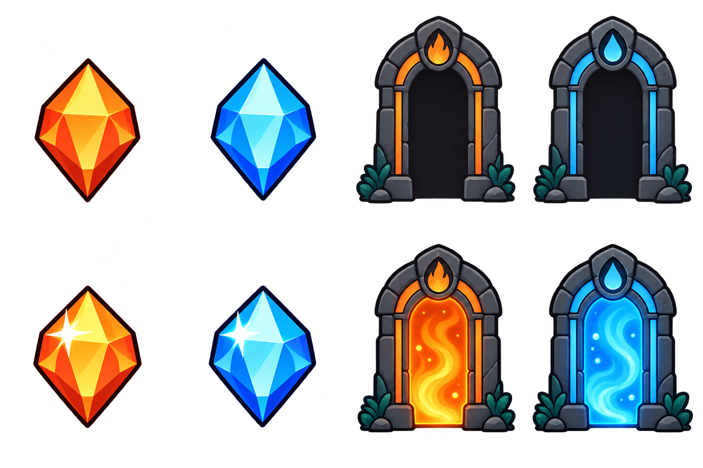
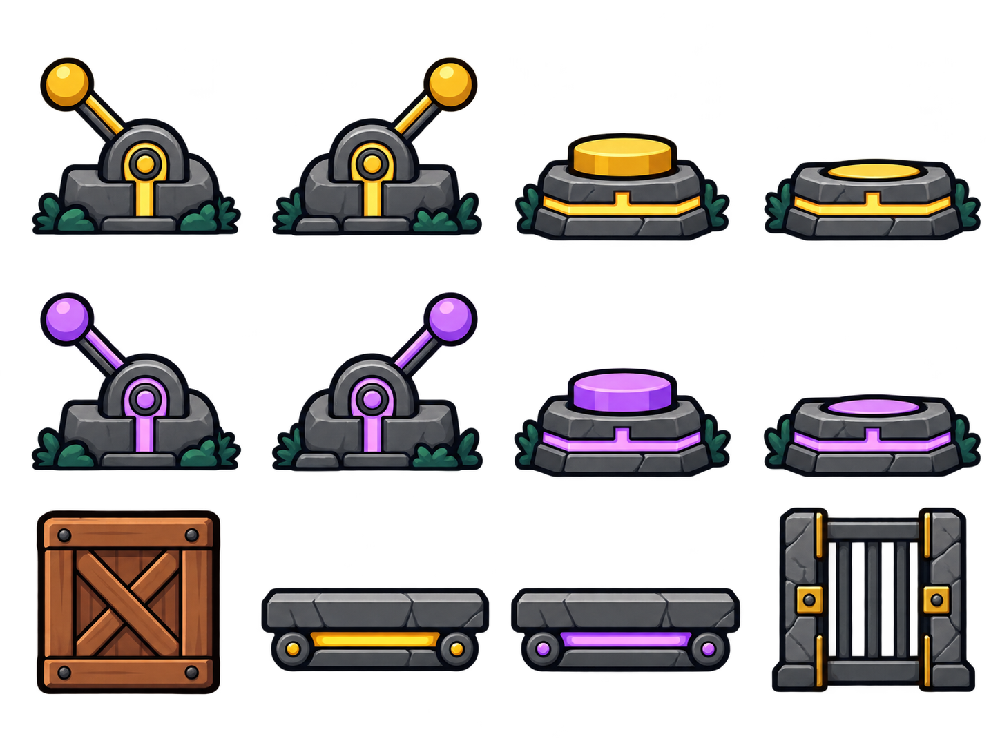
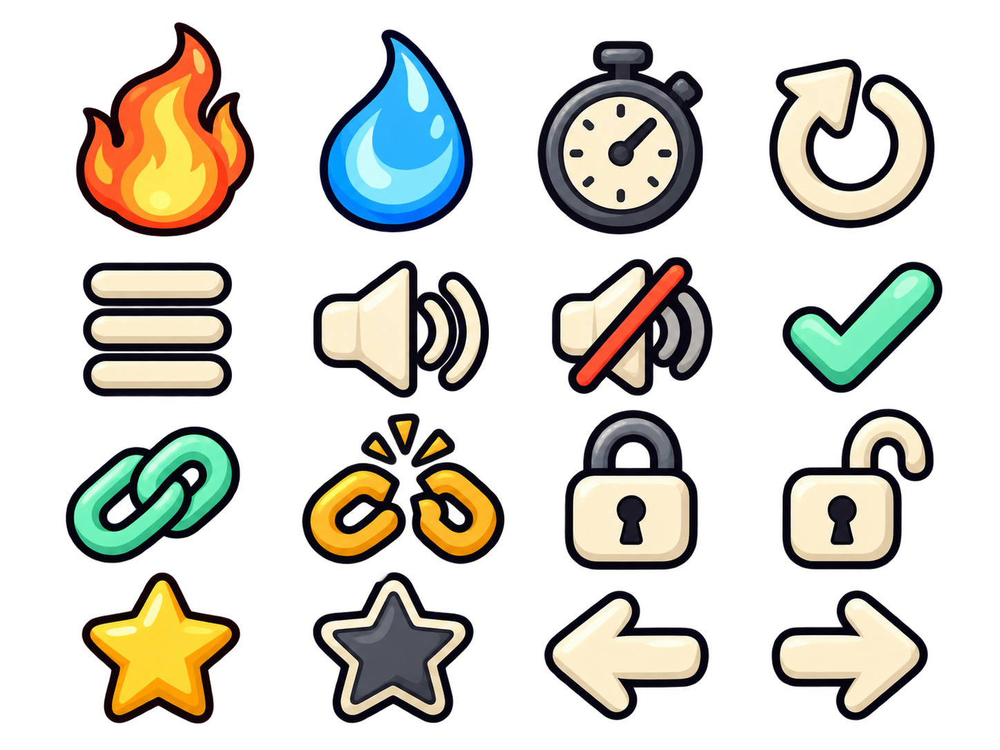
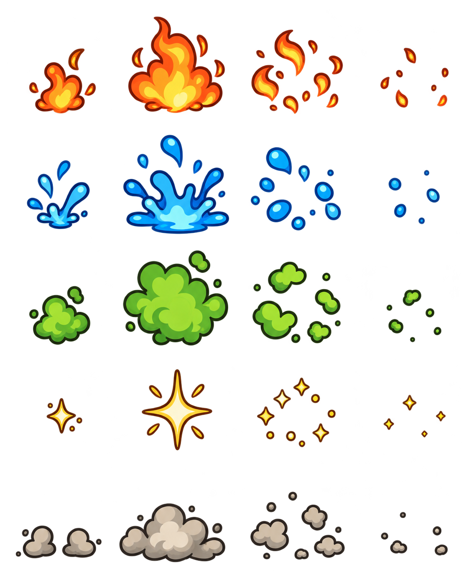
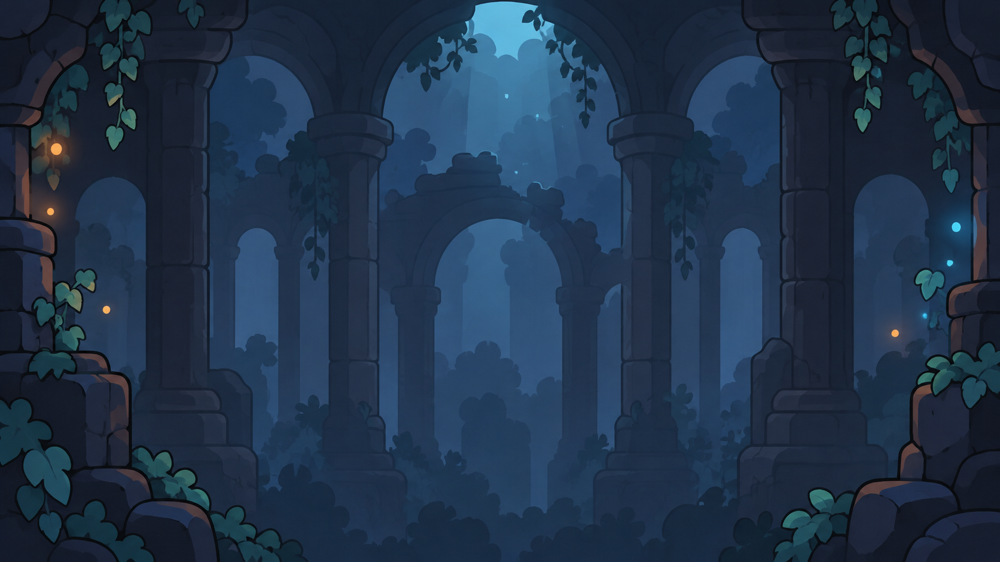
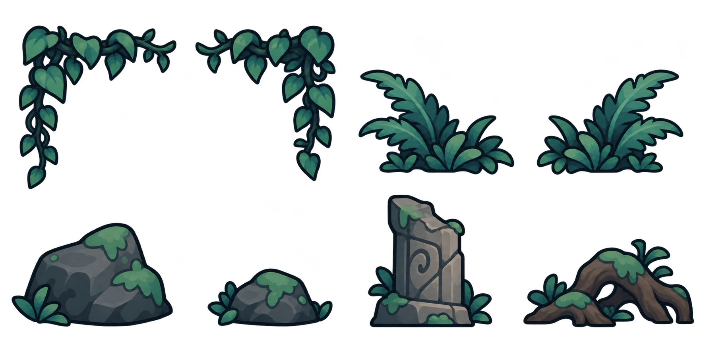

WaterFire · 그래픽 팩 v1
WaterFire · 그래픽 팩 v1
불과 물의 협동 퍼즐 게임 · 캐릭터 동작, 사원 지형, 퍼즐 장치, UI와 효과
그래픽 원본 미리보기. 게임 연결과 실제 프레임 재생은 아직 검증하지 않았습니다.
파일·프레임 안내

불 캐릭터 동작4 × 3 · 12 포즈/요소

물 캐릭터 동작4 × 3 · 12 포즈/요소

지형4 × 4 · 16 포즈/요소

용암·물·독4 × 3 · 12 포즈/요소

보석·출구4 × 2 · 8 포즈/요소

퍼즐 장치4 × 3 · 12 포즈/요소

UI 아이콘4 × 4 · 16 포즈/요소

이벤트 효과4 × 5 · 20 포즈/요소

사원 배경단일 배경

배경 장식4 × 2 · 8 포즈/요소